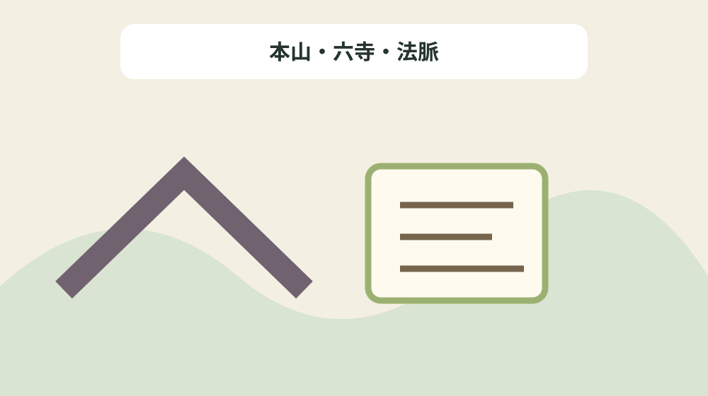
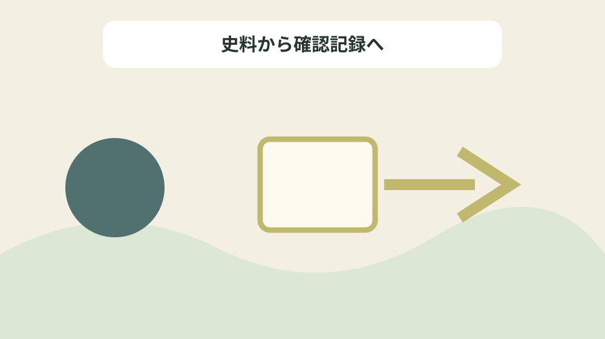

大洞院六派を開山・寺院・移転・系譜で整理する
結論：開山、派名、中心寺院、移転、伝承の確度を結ぶことで、資料の記載と現在の状態を混同しない大洞院六派系譜表になります。
大洞院六派系譜表で解く問い
森町公式資料には「現在、遠州の仏教寺院を数の上から見ると曹洞宗が圧倒的に多いと言われる。」と記されています。大洞院六派を開山・寺院・移転・系譜で整理するでは、この記載を大洞院六派系譜表の一行にし、開山、派名、中心寺院、移転、伝承の確度を結ぶための根拠として扱います。資料名と確認日を先に書き、後から説明だけが独り歩きしないようにします。
同じページで確認できる「越前守護でもあった斯波氏の意向に沿うものであったに相違ない。」は、前の事実と似ていても別の対象です。本山・六寺・法脈を読み解くときは、資料の掲載順ではなく、名称・年代・場所・根拠の対応を見ます。写真、家族の記憶、公的資料を三列に分け、食い違いを未確認として残します。
大洞院六派系譜表では「遠江、或いは東海地方に曹洞宗教団の発展する基礎をつくったのは如仲天？（王へんに光）(じょちゅうてんぎん)(1365年<貞治4年>～1437年<永享9年>)で、その拠点となったのが大洞院(だいとういん)であった。」の確認欄と「曹洞宗発展の理由の1つに葬祭と授戒会(じゅかいえ)があり、これらは禅僧が直接民衆1人1人と因縁を結んだもので、従来の諸宗教が満たしてくれない禅僧が持っていた機能であった。」の照会欄を分けます。公式本文が述べていない現況や公開可否は未確認と書き、家族の記憶には話者と聞取日を添えます。旧記録を消さず、回答日と確認先を付けた新しい行を追加します。
公式本文から確定できる十二事実
森町公式資料には「如仲は信濃国の生まれで、9歳で仏門に入り、のちに越前国(福井県)平田山竜沢寺 梅山聞本 ( ばいさんもんぽん ) の許で印可を受けた。」と記されています。大洞院六派を開山・寺院・移転・系譜で整理するでは、この記載を大洞院六派系譜表の一行にし、開山、派名、中心寺院、移転、伝承の確度を結ぶための根拠として扱います。主語と対象を原文へ戻し、似た地名や人物を同じものとして扱いません。
同じページで確認できる「(3)橘谷山大洞院。2代となって大洞院を開いた。 橘谷は、一宮別当蓮華寺の北方で、本宮山への峯入口でもある。 (森町橘)」は、前の事実と似ていても別の対象です。本山・六寺・法脈を読み解くときは、資料の掲載順ではなく、名称・年代・場所・根拠の対応を見ます。資料の利点は典拠へ戻れることにあり、現在の状態を保証するものではありません。
大洞院六派系譜表では「越前守護でもあった斯波氏の意向に沿うものであったに相違ない。」の確認欄と「(5)真厳派高雲寺。寺伝では、大洞院の末寺として一宮宮代に宮沢山高雲寺として開かれたという。 その後、一宮神主鈴木氏の菩提所となり谷崎村に移され一宮山を山号とした。 天正9年には「カタセ耕雲寺」とあり、片瀬に一時あったのかもしれない。 (森町谷崎)」の照会欄を分けます。公式本文が述べていない現況や公開可否は未確認と書き、家族の記憶には話者と聞取日を添えます。不動産の道路、境界、登記、建物安全性は、この歴史資料とは別に調べます。
大洞院六派系譜表の列を決める
森町公式資料には「曹洞宗発展の理由の1つに葬祭と授戒会(じゅかいえ)があり、これらは禅僧が直接民衆1人1人と因縁を結んだもので、従来の諸宗教が満たしてくれない禅僧が持っていた機能であった。」と記されています。大洞院六派を開山・寺院・移転・系譜で整理するでは、この記載を大洞院六派系譜表の一行にし、開山、派名、中心寺院、移転、伝承の確度を結ぶための根拠として扱います。年号の横へ出来事を示す動詞を残し、制作年と伝来年を一つにしません。
同じページで確認できる「如仲は信濃国の生まれで、9歳で仏門に入り、のちに越前国(福井県)平田山竜沢寺 梅山聞本 ( ばいさんもんぽん ) の許で印可を受けた。」は、前の事実と似ていても別の対象です。本山・六寺・法脈を読み解くときは、資料の掲載順ではなく、名称・年代・場所・根拠の対応を見ます。不足する情報を空欄の理由として残し、推測で表を完成させません。
大洞院六派系譜表では「(2)如仲庵跡の発掘。伝承によれば、院内の地を一時の庵室(あんしつ)とした如仲は、山内氏の外護により崇信寺を開いたという。 この場所は現在開発されてその跡に「如仲庵跡」の石碑を残すのみである。 (森町飯田東組)」の確認欄と「如仲の遠江への布教は、当時、遠江国の守護が今川氏から 斯波氏 ( しばし ) へ交替しており、。」の照会欄を分けます。公式本文が述べていない現況や公開可否は未確認と書き、家族の記憶には話者と聞取日を添えます。まだ売ると決めていない段階でも、資料の所在と根拠を家族で共有できます。

年代の種類を動詞で分ける
森町公式資料には「図−20 曹洞宗如仲派略系譜」と記されています。大洞院六派を開山・寺院・移転・系譜で整理するでは、この記載を大洞院六派系譜表の一行にし、開山、派名、中心寺院、移転、伝承の確度を結ぶための根拠として扱います。所在地が示されても見学可能とは限らないため、公開条件を別に確認します。
同じページで確認できる「(2)如仲庵跡の発掘。伝承によれば、院内の地を一時の庵室(あんしつ)とした如仲は、山内氏の外護により崇信寺を開いたという。 この場所は現在開発されてその跡に「如仲庵跡」の石碑を残すのみである。 (森町飯田東組)」は、前の事実と似ていても別の対象です。本山・六寺・法脈を読み解くときは、資料の掲載順ではなく、名称・年代・場所・根拠の対応を見ます。問い合わせは対象名、参照ページ、確認済みの事実、知りたい一点に絞ります。
大洞院六派系譜表では「(5)真厳派高雲寺。寺伝では、大洞院の末寺として一宮宮代に宮沢山高雲寺として開かれたという。 その後、一宮神主鈴木氏の菩提所となり谷崎村に移され一宮山を山号とした。 天正9年には「カタセ耕雲寺」とあり、片瀬に一時あったのかもしれない。 (森町谷崎)」の確認欄と「図−20 曹洞宗如仲派略系譜」の照会欄を分けます。公式本文が述べていない現況や公開可否は未確認と書き、家族の記憶には話者と聞取日を添えます。最初の一行から始め、十二事実を同時に確定しようとしないことが継続の要点です。
場所・所蔵・公開条件を混同しない
森町公式資料には「現在、遠州の仏教寺院を数の上から見ると曹洞宗が圧倒的に多いと言われる。」と記されています。大洞院六派を開山・寺院・移転・系譜で整理するでは、この記載を大洞院六派系譜表の一行にし、開山、派名、中心寺院、移転、伝承の確度を結ぶための根拠として扱います。写真、家族の記憶、公的資料を三列に分け、食い違いを未確認として残します。
同じページで確認できる「何故そうなったかと言うと、15世紀後半から17世紀前半にかけて、寺院が開かれたり、旧来からの寺院が曹洞宗に改宗されたことによる。」は、前の事実と似ていても別の対象です。本山・六寺・法脈を読み解くときは、資料の掲載順ではなく、名称・年代・場所・根拠の対応を見ます。旧記録を消さず、回答日と確認先を付けた新しい行を追加します。
大洞院六派系譜表では「遠江、或いは東海地方に曹洞宗教団の発展する基礎をつくったのは如仲天？（王へんに光）(じょちゅうてんぎん)(1365年<貞治4年>～1437年<永享9年>)で、その拠点となったのが大洞院(だいとういん)であった。」の確認欄と「遠江、或いは東海地方に曹洞宗教団の発展する基礎をつくったのは如仲天？（王へんに光）(じょちゅうてんぎん)(1365年<貞治4年>～1437年<永享9年>)で、その拠点となったのが大洞院(だいとういん)であった。」の照会欄を分けます。公式本文が述べていない現況や公開可否は未確認と書き、家族の記憶には話者と聞取日を添えます。資料名と確認日を先に書き、後から説明だけが独り歩きしないようにします。
良い点
森町公式資料には「如仲は信濃国の生まれで、9歳で仏門に入り、のちに越前国(福井県)平田山竜沢寺 梅山聞本 ( ばいさんもんぽん ) の許で印可を受けた。」と記されています。大洞院六派を開山・寺院・移転・系譜で整理するでは、この記載を大洞院六派系譜表の一行にし、開山、派名、中心寺院、移転、伝承の確度を結ぶための根拠として扱います。資料の利点は典拠へ戻れることにあり、現在の状態を保証するものではありません。
同じページで確認できる「曹洞宗発展の理由の1つに葬祭と授戒会(じゅかいえ)があり、これらは禅僧が直接民衆1人1人と因縁を結んだもので、従来の諸宗教が満たしてくれない禅僧が持っていた機能であった。」は、前の事実と似ていても別の対象です。本山・六寺・法脈を読み解くときは、資料の掲載順ではなく、名称・年代・場所・根拠の対応を見ます。不動産の道路、境界、登記、建物安全性は、この歴史資料とは別に調べます。
大洞院六派系譜表では「越前守護でもあった斯波氏の意向に沿うものであったに相違ない。」の確認欄と「(1) 如仲天？（王へんに光） ( じょちゅうてんぎん ) 禅師画像。(森町橘 大洞院所蔵)」の照会欄を分けます。公式本文が述べていない現況や公開可否は未確認と書き、家族の記憶には話者と聞取日を添えます。主語と対象を原文へ戻し、似た地名や人物を同じものとして扱いません。
注文したい点
森町公式資料には「曹洞宗発展の理由の1つに葬祭と授戒会(じゅかいえ)があり、これらは禅僧が直接民衆1人1人と因縁を結んだもので、従来の諸宗教が満たしてくれない禅僧が持っていた機能であった。」と記されています。大洞院六派を開山・寺院・移転・系譜で整理するでは、この記載を大洞院六派系譜表の一行にし、開山、派名、中心寺院、移転、伝承の確度を結ぶための根拠として扱います。不足する情報を空欄の理由として残し、推測で表を完成させません。
同じページで確認できる「(5)真厳派高雲寺。寺伝では、大洞院の末寺として一宮宮代に宮沢山高雲寺として開かれたという。 その後、一宮神主鈴木氏の菩提所となり谷崎村に移され一宮山を山号とした。 天正9年には「カタセ耕雲寺」とあり、片瀬に一時あったのかもしれない。 (森町谷崎)」は、前の事実と似ていても別の対象です。本山・六寺・法脈を読み解くときは、資料の掲載順ではなく、名称・年代・場所・根拠の対応を見ます。まだ売ると決めていない段階でも、資料の所在と根拠を家族で共有できます。
大洞院六派系譜表では「(2)如仲庵跡の発掘。伝承によれば、院内の地を一時の庵室(あんしつ)とした如仲は、山内氏の外護により崇信寺を開いたという。 この場所は現在開発されてその跡に「如仲庵跡」の石碑を残すのみである。 (森町飯田東組)」の確認欄と「現在、遠州の仏教寺院を数の上から見ると曹洞宗が圧倒的に多いと言われる。」の照会欄を分けます。公式本文が述べていない現況や公開可否は未確認と書き、家族の記憶には話者と聞取日を添えます。年号の横へ出来事を示す動詞を残し、制作年と伝来年を一つにしません。
対案・結論
森町公式資料には「図−20 曹洞宗如仲派略系譜」と記されています。大洞院六派を開山・寺院・移転・系譜で整理するでは、この記載を大洞院六派系譜表の一行にし、開山、派名、中心寺院、移転、伝承の確度を結ぶための根拠として扱います。問い合わせは対象名、参照ページ、確認済みの事実、知りたい一点に絞ります。
同じページで確認できる「如仲の遠江への布教は、当時、遠江国の守護が今川氏から 斯波氏 ( しばし ) へ交替しており、。」は、前の事実と似ていても別の対象です。本山・六寺・法脈を読み解くときは、資料の掲載順ではなく、名称・年代・場所・根拠の対応を見ます。最初の一行から始め、十二事実を同時に確定しようとしないことが継続の要点です。
大洞院六派系譜表では「(5)真厳派高雲寺。寺伝では、大洞院の末寺として一宮宮代に宮沢山高雲寺として開かれたという。 その後、一宮神主鈴木氏の菩提所となり谷崎村に移され一宮山を山号とした。 天正9年には「カタセ耕雲寺」とあり、片瀬に一時あったのかもしれない。 (森町谷崎)」の確認欄と「越前守護でもあった斯波氏の意向に沿うものであったに相違ない。」の照会欄を分けます。公式本文が述べていない現況や公開可否は未確認と書き、家族の記憶には話者と聞取日を添えます。所在地が示されても見学可能とは限らないため、公開条件を別に確認します。

家族に残す確認記録
森町公式資料には「現在、遠州の仏教寺院を数の上から見ると曹洞宗が圧倒的に多いと言われる。」と記されています。大洞院六派を開山・寺院・移転・系譜で整理するでは、この記載を大洞院六派系譜表の一行にし、開山、派名、中心寺院、移転、伝承の確度を結ぶための根拠として扱います。旧記録を消さず、回答日と確認先を付けた新しい行を追加します。
同じページで確認できる「図−20 曹洞宗如仲派略系譜」は、前の事実と似ていても別の対象です。本山・六寺・法脈を読み解くときは、資料の掲載順ではなく、名称・年代・場所・根拠の対応を見ます。資料名と確認日を先に書き、後から説明だけが独り歩きしないようにします。
大洞院六派系譜表では「遠江、或いは東海地方に曹洞宗教団の発展する基礎をつくったのは如仲天？（王へんに光）(じょちゅうてんぎん)(1365年<貞治4年>～1437年<永享9年>)で、その拠点となったのが大洞院(だいとういん)であった。」の確認欄と「(3)橘谷山大洞院。2代となって大洞院を開いた。 橘谷は、一宮別当蓮華寺の北方で、本宮山への峯入口でもある。 (森町橘)」の照会欄を分けます。公式本文が述べていない現況や公開可否は未確認と書き、家族の記憶には話者と聞取日を添えます。写真、家族の記憶、公的資料を三列に分け、食い違いを未確認として残します。
現地確認と権利資料を分ける
森町公式資料には「如仲は信濃国の生まれで、9歳で仏門に入り、のちに越前国(福井県)平田山竜沢寺 梅山聞本 ( ばいさんもんぽん ) の許で印可を受けた。」と記されています。大洞院六派を開山・寺院・移転・系譜で整理するでは、この記載を大洞院六派系譜表の一行にし、開山、派名、中心寺院、移転、伝承の確度を結ぶための根拠として扱います。不動産の道路、境界、登記、建物安全性は、この歴史資料とは別に調べます。
同じページで確認できる「遠江、或いは東海地方に曹洞宗教団の発展する基礎をつくったのは如仲天？（王へんに光）(じょちゅうてんぎん)(1365年<貞治4年>～1437年<永享9年>)で、その拠点となったのが大洞院(だいとういん)であった。」は、前の事実と似ていても別の対象です。本山・六寺・法脈を読み解くときは、資料の掲載順ではなく、名称・年代・場所・根拠の対応を見ます。主語と対象を原文へ戻し、似た地名や人物を同じものとして扱いません。
大洞院六派系譜表では「越前守護でもあった斯波氏の意向に沿うものであったに相違ない。」の確認欄と「如仲は信濃国の生まれで、9歳で仏門に入り、のちに越前国(福井県)平田山竜沢寺 梅山聞本 ( ばいさんもんぽん ) の許で印可を受けた。」の照会欄を分けます。公式本文が述べていない現況や公開可否は未確認と書き、家族の記憶には話者と聞取日を添えます。資料の利点は典拠へ戻れることにあり、現在の状態を保証するものではありません。
大石の視点
森町公式資料には「曹洞宗発展の理由の1つに葬祭と授戒会(じゅかいえ)があり、これらは禅僧が直接民衆1人1人と因縁を結んだもので、従来の諸宗教が満たしてくれない禅僧が持っていた機能であった。」と記されています。大洞院六派を開山・寺院・移転・系譜で整理するでは、この記載を大洞院六派系譜表の一行にし、開山、派名、中心寺院、移転、伝承の確度を結ぶための根拠として扱います。まだ売ると決めていない段階でも、資料の所在と根拠を家族で共有できます。
同じページで確認できる「(1) 如仲天？（王へんに光） ( じょちゅうてんぎん ) 禅師画像。(森町橘 大洞院所蔵)」は、前の事実と似ていても別の対象です。本山・六寺・法脈を読み解くときは、資料の掲載順ではなく、名称・年代・場所・根拠の対応を見ます。年号の横へ出来事を示す動詞を残し、制作年と伝来年を一つにしません。
大洞院六派系譜表では「(2)如仲庵跡の発掘。伝承によれば、院内の地を一時の庵室(あんしつ)とした如仲は、山内氏の外護により崇信寺を開いたという。 この場所は現在開発されてその跡に「如仲庵跡」の石碑を残すのみである。 (森町飯田東組)」の確認欄と「(2)如仲庵跡の発掘。伝承によれば、院内の地を一時の庵室(あんしつ)とした如仲は、山内氏の外護により崇信寺を開いたという。 この場所は現在開発されてその跡に「如仲庵跡」の石碑を残すのみである。 (森町飯田東組)」の照会欄を分けます。公式本文が述べていない現況や公開可否は未確認と書き、家族の記憶には話者と聞取日を添えます。不足する情報を空欄の理由として残し、推測で表を完成させません。
まとめ
森町公式資料には「図−20 曹洞宗如仲派略系譜」と記されています。大洞院六派を開山・寺院・移転・系譜で整理するでは、この記載を大洞院六派系譜表の一行にし、開山、派名、中心寺院、移転、伝承の確度を結ぶための根拠として扱います。最初の一行から始め、十二事実を同時に確定しようとしないことが継続の要点です。
同じページで確認できる「現在、遠州の仏教寺院を数の上から見ると曹洞宗が圧倒的に多いと言われる。」は、前の事実と似ていても別の対象です。本山・六寺・法脈を読み解くときは、資料の掲載順ではなく、名称・年代・場所・根拠の対応を見ます。所在地が示されても見学可能とは限らないため、公開条件を別に確認します。
大洞院六派系譜表では「(5)真厳派高雲寺。寺伝では、大洞院の末寺として一宮宮代に宮沢山高雲寺として開かれたという。 その後、一宮神主鈴木氏の菩提所となり谷崎村に移され一宮山を山号とした。 天正9年には「カタセ耕雲寺」とあり、片瀬に一時あったのかもしれない。 (森町谷崎)」の確認欄と「何故そうなったかと言うと、15世紀後半から17世紀前半にかけて、寺院が開かれたり、旧来からの寺院が曹洞宗に改宗されたことによる。」の照会欄を分けます。公式本文が述べていない現況や公開可否は未確認と書き、家族の記憶には話者と聞取日を添えます。問い合わせは対象名、参照ページ、確認済みの事実、知りたい一点に絞ります。
よくある質問
大洞院六派系譜表で最初に書く項目は何ですか。
資料名、対象名、確認日、根拠の種類です。開山、派名、中心寺院、移転、伝承の確度を結ぶため、現況と家族の記憶は別欄にします。
大洞院六派系譜表に所在地があれば現地を見学できますか。
掲載だけでは判断できません。現在、遠州の仏教寺院を数の上から見ると曹洞宗が圧倒的に多いと言われる。という記録は本山・六寺・法脈を読む根拠ですが、現在の公開日時や立入り条件の根拠ではありません。対象ごとに管理者の案内を確認します。
大洞院六派系譜表で年代が複数ある場合はどれを採用しますか。
遠江、或いは東海地方に曹洞宗教団の発展する基礎をつくったのは如仲天？（王へんに光）(じょちゅうてんぎん)(1365年<貞治4年>～1437年<永享9年>)で、その拠点となったのが大洞院(だいとういん)であった。という記録を起点に、本山・六寺・法脈の制作、記録、移転、発見などの動作を分けます。異なる出来事の年は統合せず、それぞれの典拠を同じ行に残します。
家族の記憶は大洞院六派系譜表の公式事実と一緒に書けますか。
如仲は信濃国の生まれで、9歳で仏門に入り、のちに越前国(福井県)平田山竜沢寺 梅山聞本 ( ばいさんもんぽん ) の許で印可を受けた。という公的記載とは別欄にします。本山・六寺・法脈について話した人、聞取日、確信度を書けば、家族の記憶を残しつつ公的資料へ上書きせず比較できます。
公式情報源
最終確認日：2026-08-18 ／ 公表事実と執筆者の解釈・意見を分けて記載しています。